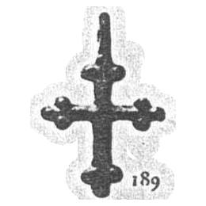

Catalog › CE-0067 · KHA1900-189
Cruciuliță de bronz cu cruciulițe din bile la capete
XII–XIII в. (1101–1300) · Lipliava (Липлява), ținutul Zolotonoșa, gubernia Poltava, Ucraina · Colecția B. I. și V. N. Khanenko, Kiev, inv. nr. 189 (numerotarea colecției Khanenko)
pectoral cross, bronz; XII–XIII в. (1101–1300); found at Lipliava (Липлява), ținutul Zolotonoșa, gubernia Poltava, Ucraina; kept at Colecția B. I. și V. N. Khanenko, Kiev.


Identificare
- Categorie
- Cruce pectorală simplă
- Material
- Bronz
Iconografie
- Descriere avers
- Cruciuliță de bronz, cu cruciulițe formate din bile la capetele brațelor.
Datare și atribuire
- Datare
- XII–XIII в. (1101–1300)
- Centru
- Necunoscut
Descoperire
- Localitate
- Lipliava (Липлява)
- Regiune
- ținutul Zolotonoșa, gubernia Poltava
- Țară
- Ucraina
- Context
- Necunoscut
- Coordonate
- 49.7869° N, 31.5472° E
- Precizia locului
- Doar localitatea
Păstrare și referințe
- Colecție
- Colecția B. I. și V. N. Khanenko, Kiev
- Nr. inventar
- nr. 189 (numerotarea colecției Khanenko)
- Bibliografie
- B. I. și V. N. Khanenko, Древности русскія. Кресты и образки, вып. II (Собраніе Б. И. и В. Н. Ханенко), Kiev, 1900 [Khanenko 1900], cat. nr. 189, Tabl. XVII, reprodusă la Табл. XVII, fig. 189 (planșa de la p. 8 a PDF-ului).
- Figura
- Табл. XVII, fig. 189
- Planșe
- Khanenko 1900, Табл. XVII (planșă fără paginație tipărită; p. 8 în PDF)
- Observații
- Datare după Khanenko: XII–XIII в. Coordonate: ale localității (aproximative), nu date în sursă.
Citare: Corpus Encolpiorum, CE-0067, Cruciuliță de bronz cu cruciulițe din bile la capete, --root/piese/KHA1900-189/ (accesat 2026-10-20).